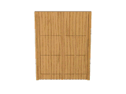
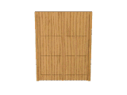

My GeoCities about GeoCities
GeoCities made a very big mark on the visual culture of the internet in the 90’s. With gif, funky texts and fun backgrounds. GeoCities were not unique for making a platform for people to make their own website, it was unique in the way they started the idea of networking. Linking people through neighborhoods while have a very simple drag and drop method for the development of the webpage. GeoCities started the idea of publishing oneself online to connect different communities. It was heavily based on the users imagination and creativity, which as a result has left a legacy for fun and interesting websites that people can look back on in a nostalgic way. To an extent were GeoCities were archived by Olia Lialina. Old GeoCities users can go back and recall the days of publishing online with absolute freedom to be creative and present oneself in the most authentic way.
Example...
